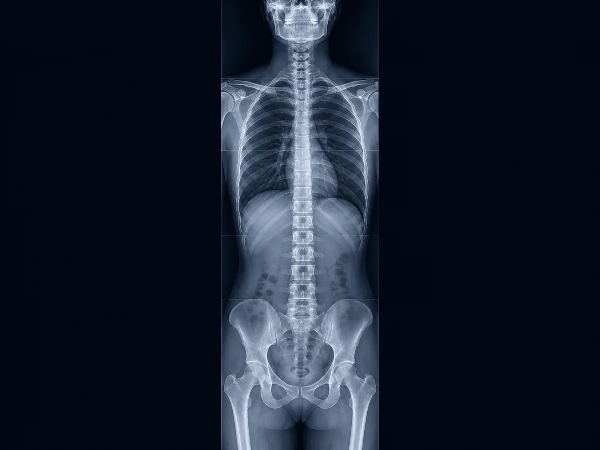

Permite observar en conjunto las regiones cervical, torácica y lumbar, además de su relación con la pelvis.
Radiografía panorámica · Stitching digital
Espinograma en León, Guanajuato
Imagen radiográfica de gran longitud que muestra la columna completa en una sola vista continua. En EcoScan empleamos stitching digital para integrar varias adquisiciones y facilitar la valoración global de la alineación de la columna.
Atención sin citaLun–vie 8:00 a.m.–8:00 p.m.Sáb 8:00 a.m.–2:00 p.m.

Imagen ilustrativaUna vista de gran longitud
¿Qué es un espinograma?
Es una radiografía que incluye la columna en una extensión amplia, con frecuencia en posición de pie cuando la indicación clínica lo requiere. El médico solicitante define las proyecciones apropiadas para cada paciente.
Apoya la revisión de la alineación de la columna y el seguimiento indicado por el médico tratante.
El estudio es interpretado por Médico Radiólogo certificado por el Consejo Mexicano de Radiología e Imagen.
Tecnología poco común en centros pequeños
¿Cómo funciona el stitching digital?
La tecnología adquiere varias imágenes radiográficas consecutivas y las compone digitalmente para formar una vista panorámica continua de la columna.
Posicionamiento
El técnico coloca al paciente de acuerdo con la proyección solicitada y la región que debe cubrirse.
Adquisiciones consecutivas
Se obtienen las imágenes necesarias para abarcar una longitud mayor que la de una radiografía convencional.
Composición panorámica
El software integra las adquisiciones en una sola imagen de gran longitud para su revisión e interpretación.
Importante: trae tu indicación médica si cuentas con ella. La posición, las proyecciones y el campo de estudio pueden cambiar según la pregunta clínica y las condiciones de cada paciente.
EcoScan León
¿Necesitas un espinograma?
Puedes acudir sin cita dentro del horario de Rayos X. Si deseas confirmar la indicación o las proyecciones solicitadas, envíanos una foto de tu orden médica por WhatsApp.